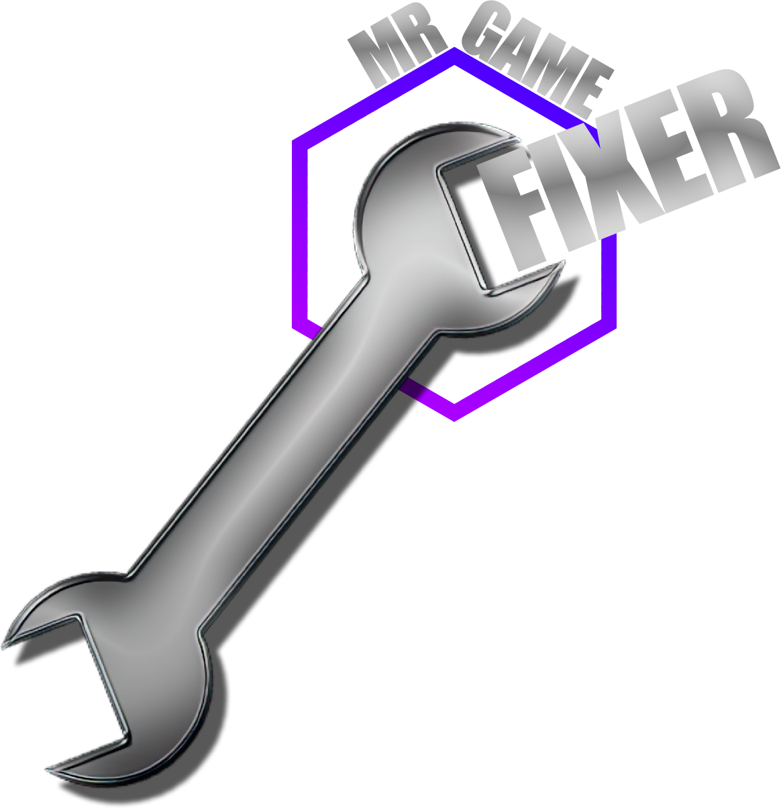

Microsoft Defender uses reputation-based detection in addition to traditional virus signatures. Newly released and niche community tools can occasionally trigger warnings because they have a small user base and limited reputation. If you downloaded the launcher from one of my official sources, it is safe to restore the file or optionally add the game's folder to the exclusions list.
Code-signing certificates are expensive for independent hobby developers. Until the project grows enough to justify that cost, Windows may treat the launcher as an unknown application.
Yes. You are welcome to scan the launcher with multiple antivirus engines and inspect its behavior independently.
That's completely okay. You should only run software from sources you trust.